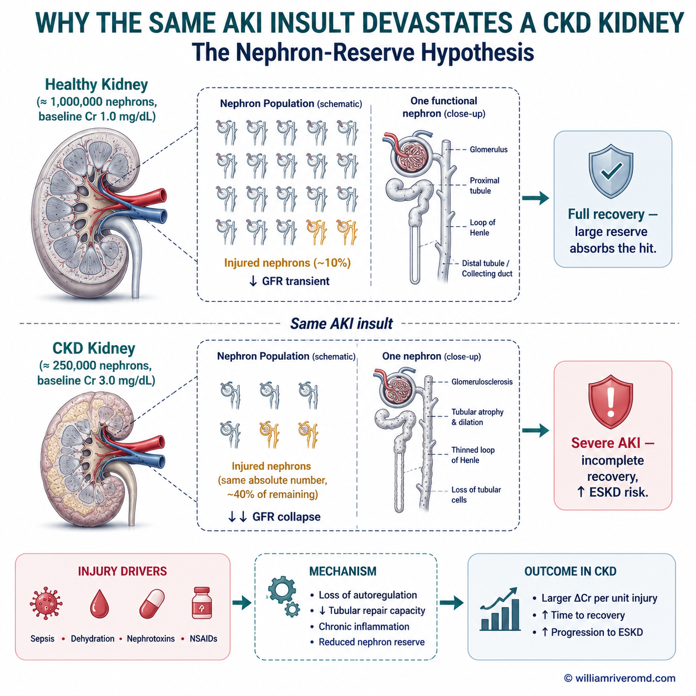
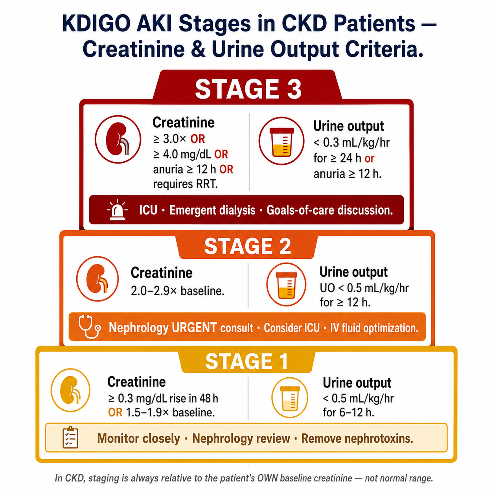
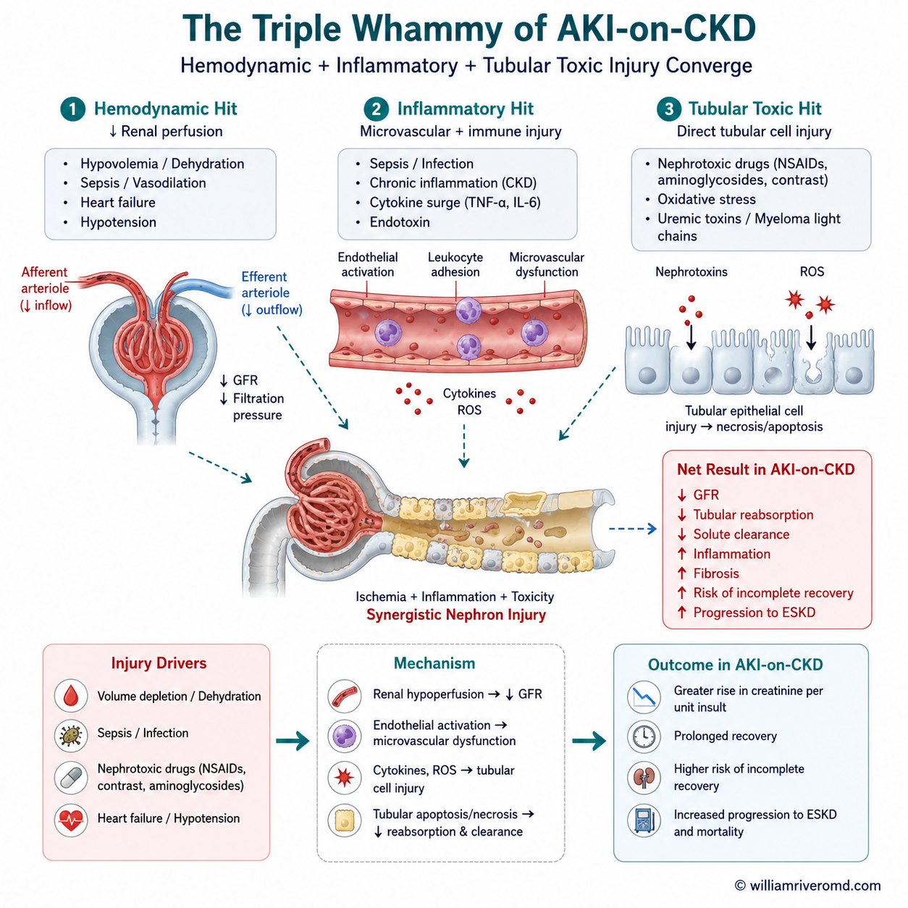
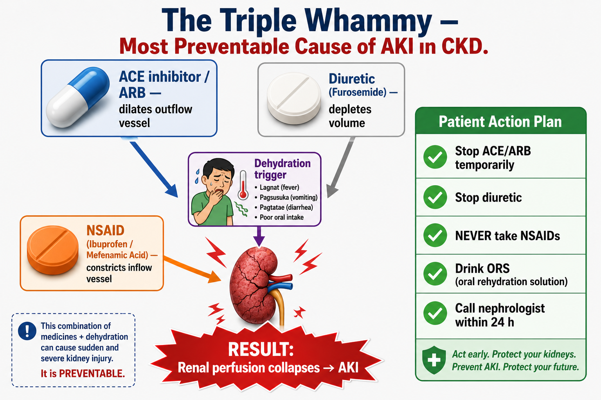
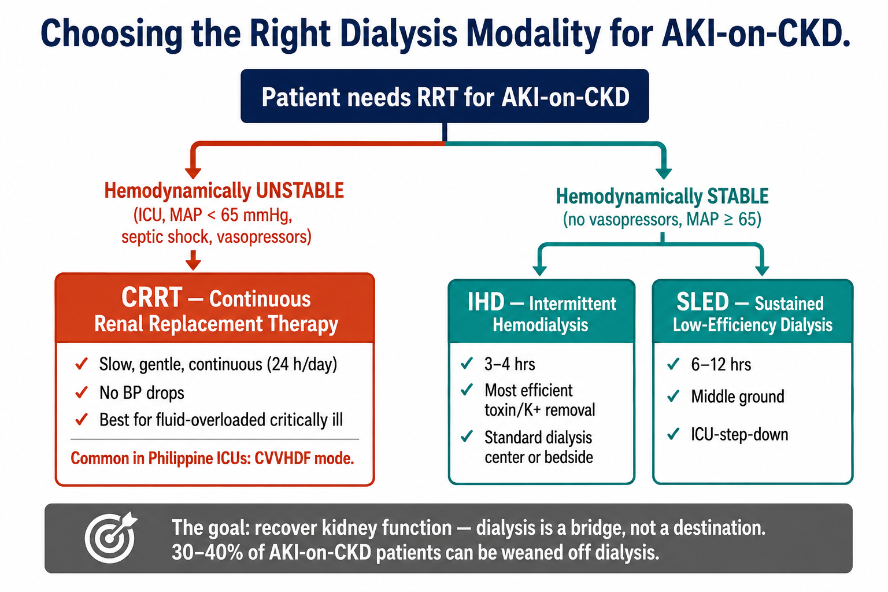
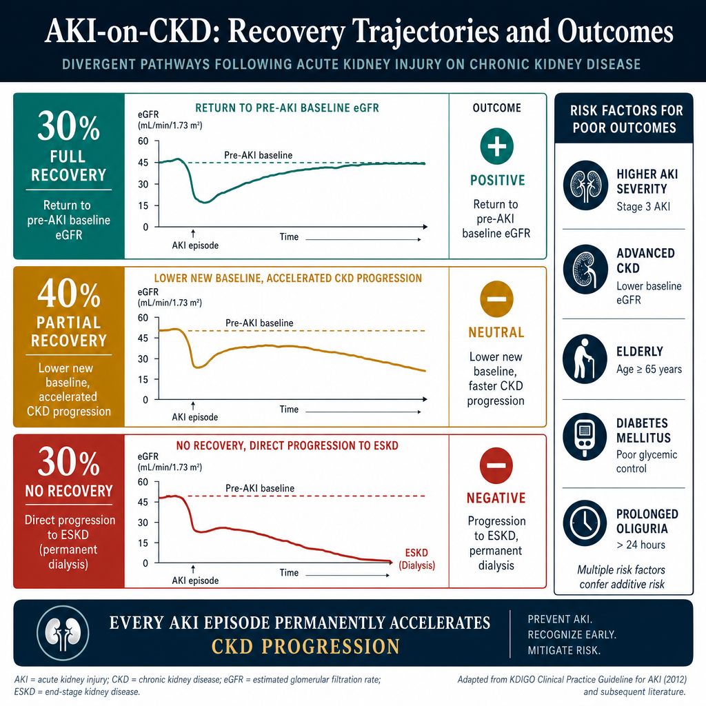
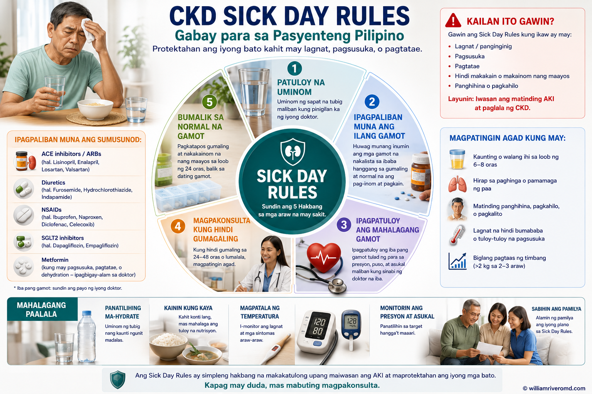
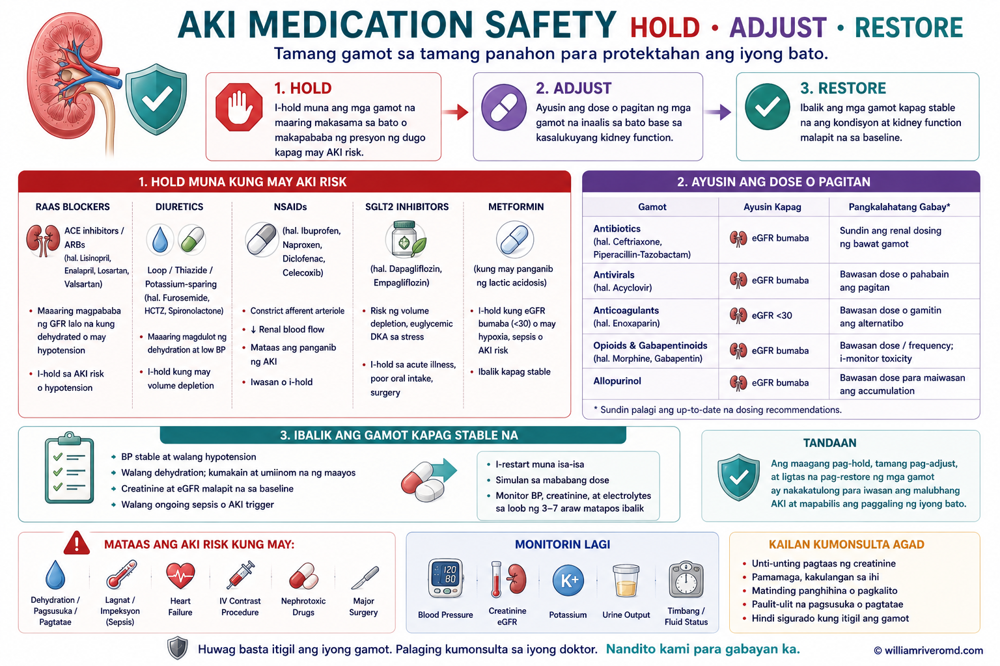

What Is AKI-on-CKD and Why Is It So Serious?
Ano ang AKI-on-CKD at Bakit Ito Napakaseryoso?
Unsa ang AKI-on-CKD ug Ngano Grabe Kaayo Kini?
Ano ing AKI-on-CKD at Bakit Ini Napakaseryoso?
AKI-on-CKD (acute kidney injury on chronic kidney disease) occurs when an acute kidney injury develops in a patient who already has chronic kidney disease. It is uniquely dangerous because: the baseline reserve is already depleted (fewer functional nephrons), the injured kidney has less capacity to recover, uremic complications appear at much lower creatinine rise than in previously healthy kidneys, and the risk of permanent function loss — and dialysis dependence — is dramatically higher than AKI in previously healthy individuals.
Ang AKI-on-CKD ay nangyayari kapag ang acute kidney injury ay nagkaroon sa pasyenteng may chronic kidney disease na (matagalang sakit sa bato). Ito ay lubhang mapanganib dahil: ubos na ang reserbang lakas ng bato (mas kakaunti na ang gumaganang nephron o yunit ng bato), mas mahina ang kakayahan ng nasirang bato na gumaling, ang mga komplikasyon ng uremia (pagtitipon ng lason sa dugo) ay lumilitaw sa mas mababang pagtaas ng creatinine kumpara sa dating malusog na bato, at ang panganib ng permanenteng pagkawala ng function — at pag-asa sa dialysis — ay mas mataas kaysa sa AKI sa dating malusog na tao.
Ang AKI-on-CKD mahitabo kung ang acute kidney injury motubo sa pasyente nga naa nay chronic kidney disease. Kini lahi ang kadelikado tungod kay: ang baseline reserve naubos na (mas gamay na ang functional nephrons o mga nagpasala sa ihi), ang na-injure nga kidney kulang sa kapasidad sa pag-recover, ang uremic complications mogawas bisan gamay ra ang pagtaas sa creatinine kompara sa healthy kidneys, ug ang risgo sa permanente nga pagkawala sa function — ug pagsalig sa dialysis — mas taas kaayo kompara sa AKI sa healthy nga mga indibidwal.
Ing AKI-on-CKD ya nangyayari nung ing acute kidney injury ya nagkaroon sa pasyenteng may chronic kidney disease na (matagalaning sakit sa batu). Ini ya lubhang mapanganib dahil: ubos na ing reserbang lakas nining batu (mas kakaunti na ing gumaganang nephron o yunit nining batu), mas mahina ing kakayahan ning nasiraning batu na gumaling, deng komplikasyon ning uremia (pagtitipon ning lason sa daya) ya lumilitaw sa mas mababang pagtaas ning creatinine kumpara king dating malusog na batu, at ing panganib ning permanenteng pagkaala ning function — at pag-asa king dialysis — ya mas mataas kaysa sa AKI sa dating malusog na tao.

The same AKI insult — dehydration, sepsis, or nephrotoxic drug — causes proportionally greater damage and recovery is far less complete when kidney reserve is already reduced by CKD. A creatinine rise from 1.0 to 3.0 mg/dL in a healthy person is very different from the same rise in someone whose baseline is already 3.0 mg/dL.
Ang parehong sanhi ng AKI — dehydration (kakulangan sa tubig), sepsis (malubhang impeksyon sa dugo), o gamot na nakakasira sa bato — ay nagdudulot ng mas malaking pinsala at ang paggaling ay hindi kumpleto kapag ang reserba ng bato ay nabawasan na dahil sa CKD. Ang pagtaas ng creatinine mula 1.0 hanggang 3.0 mg/dL sa malusog na tao ay ibang-iba sa parehong pagtaas sa isang taong ang baseline ay 3.0 mg/dL na.
Ang pareho nga AKI insult — dehydration, sepsis, o nephrotoxic drug — magpahinabo og mas grabe nga kadaot ug ang recovery dili kompleto kung ang kidney reserve naubos na tungod sa CKD. Ang pagtaas sa creatinine gikan sa 1.0 ngadto sa 3.0 mg/dL sa healthy nga tawo lahi kaayo kompara kung kinsa ang baseline niya 3.0 mg/dL na.
Ing parehong sanhi ning AKI — dehydration (kakulangan sa danum), sepsis (malubhang impeksyon sa daya), o gamut na nakakasira sa batu — ya nagdudulot ning mas malda a pinsala at ing paggaling ya ali kumpleto nung ing reserba nining batu ya nabawasan na dahil king CKD. Ing pagtaas ning creatinine mula 1.0 anggang 3.0 mg/dL sa malusog na tao ya ibang-iba sa parehong pagtaas sa metung a banuag ing baseline ya 3.0 mg/dL na.
Why CKD increases AKI risk
Bakit pinapataas ng CKD ang panganib ng AKI
Ngano ang CKD magdugang sa AKI risk
Bakit pinapataas ning CKD ing panganib ning AKI
Impaired autoregulation — CKD kidneys cannot vasodilate adequately in response to reduced perfusion. Reduced tubular repair capacity — surviving nephrons have less regenerative potential. Chronic inflammation — baseline inflammatory state amplifies injury responses. Medication burden — many CKD patients are on ACE/ARB (angiotensin receptor blocker), diuretics, and non-steroidal anti-inflammatory drugs (NSAIDs) that interact dangerously when volume-depleted.
May sira na ang autoregulation (awtomatikong pag-aayos ng daloy ng dugo) — ang mga bato na may CKD ay hindi makapag-vasodilate (magpaluwang ng ugat) nang sapat kapag bumaba ang daloy ng dugo. Mababang kakayahan ng tubular repair — ang natitirang mga nephron ay mas mahina ang kakayahang magpanumbalik. Malalang inflammation — ang patuloy na pamamaga ay nagpapalala sa reaksyon sa pinsala. Dami ng gamot — maraming pasyenteng may CKD ang umiinom ng ACE/ARB, diuretics (pampaihi), at NSAIDs na mapanganib kapag nagsabay sa kakulangan ng tubig.
Nadaot nga autoregulation — ang CKD kidneys dili makahimo og tarong nga vasodilate kung kulang ang blood flow. Gamay na ang tubular repair capacity — ang nahibiling nephrons kulang na sa regenerative potential. Chronic inflammation — ang baseline inflammatory state magpadako sa injury responses. Daghan nga tambal — daghang CKD patients naggamit og ACE/ARB, diuretics, ug NSAIDs nga delikado kung dehydrated.
May sira na ing autoregulation (awtomatikong pag-aayos ning daloy nining daya) — dening batu na may CKD ya ali manung-vasodilate (magpaluwang ning ugat) nang sapat nung bumaba ing daloy nining daya. Mababang kakayahan ning tubular repair — ing natitirdeng nephron ya mas mahina ing kakayahang magpanumbalik. Malalang inflammation — ing patuloy na pamamaga ya nagpapalala sa reaksyon sa pinsala. Dami nining gamut — dacal a pasyenteng may CKD ing umiinom ning ACE/ARB, diuretics (pampaihi), at NSAIDs na mapanganib nung nagsabay sa kakulangan nining danum.
The AKI-on-CKD outcome data
Mga datos sa resulta ng AKI-on-CKD
Ang AKI-on-CKD outcome data
Deng datos sa resulta ning AKI-on-CKD
AKI-on-CKD carries 4–8× higher risk of end-stage kidney disease (ESKD) compared to AKI in previously healthy individuals. 30-day mortality is 2–3× higher than AKI alone. 50–60% of patients who require temporary dialysis for AKI-on-CKD do not recover enough function to discontinue dialysis. Each AKI episode accelerates long-term CKD progression — even after apparent recovery.
Ang AKI-on-CKD ay may 4–8× na mas mataas na panganib ng ESKD (huling yugto ng sakit sa bato) kumpara sa AKI sa dating malusog na tao. Ang pagkamatay sa loob ng 30 araw ay 2–3× na mas mataas kaysa sa AKI lamang. 50–60% ng mga pasyenteng nangailangan ng pansamantalang dialysis para sa AKI-on-CKD ay hindi nakaka-recover ng sapat na function para ihinto ang dialysis. Bawat episode ng AKI ay nagpapabilis sa pangmatagalang paglala ng CKD — kahit matapos ang mukhang paggaling.
Ang AKI-on-CKD adunay 4–8× mas taas nga risgo sa ESKD (end-stage kidney disease) kompara sa AKI sa healthy individuals. Ang 30-day mortality 2–3× mas taas kay sa AKI lang. 50–60% sa mga pasyente nga nanginahanglan og temporary dialysis para sa AKI-on-CKD wala maka-recover og igo para mohunong sa dialysis. Matag AKI episode magpadali sa long-term CKD progression — bisan human sa apparent recovery.
Ing AKI-on-CKD ya may 4–8× na mas matas a panganib ning ESKD (huling yugto nining sakit sa batu) kumpara king AKI sa dating malusog na tao. Ing pagkamatay sa loob ning 30 aldo ya 2–3× na mas mataas kaysa sa AKI lamang. 50–60% ning deng pasyenteng nangailangan ning pansamantalang dialysis para king AKI-on-CKD ya ali nakaka-recover ning sapat na function para ihinto ing dialysis. Bawat episode ning AKI ya nagpapabilis sa pangmatagalang paglala ning CKD — kahit matapos ing mukhang paggaling.
How to recognize AKI in a CKD patient
Paano makilala ang AKI sa pasyenteng may CKD
Unsaon pag-ila ang AKI sa CKD patient
Paano makilala ing AKI sa pasyenteng may CKD
Rise in serum creatinine ≥0.3 mg/dL within 48 hours OR ≥1.5× baseline within 7 days OR urine output <0.5 mL/kg/hr for 6 hours. In CKD patients, the baseline creatinine must be known — AKI diagnosis requires comparison to the patient's own recent baseline, not normal reference ranges. A creatinine of 3.5 in a CKD patient with a known baseline of 2.0 is AKI Stage 2.
Pagtaas ng serum creatinine ng ≥0.3 mg/dL sa loob ng 48 oras O ≥1.5× ng baseline sa loob ng 7 araw O ihi na <0.5 mL/kg/oras sa loob ng 6 oras. Sa mga pasyenteng may CKD, kailangang malaman ang baseline creatinine — ang diagnosis ng AKI ay nangangailangan ng paghahambing sa sariling kamakailang baseline ng pasyente, hindi sa normal reference ranges. Ang creatinine na 3.5 sa pasyenteng may CKD na may baseline na 2.0 ay AKI Stage 2.
Pagtaas sa serum creatinine ≥0.3 mg/dL sulod sa 48 oras O ≥1.5× baseline sulod sa 7 ka adlaw O urine output <0.5 mL/kg/hr sulod sa 6 ka oras. Sa CKD patients, kinahanglan mahibal-an ang baseline creatinine — ang AKI diagnosis nanginahanglan og pagtandi sa kaugalingon nga recent baseline sa pasyente, dili sa normal reference ranges. Ang creatinine nga 3.5 sa CKD patient nga nahibal-an nga baseline niya 2.0 kay AKI Stage 2.
Pagtaas ning serum creatinine ning ≥0.3 mg/dL sa loob ning 48 oras O ≥1.5× ning baseline sa loob ning 7 aldo O ihi na <0.5 mL/kg/oras sa loob ning 6 oras. Sa deng pasyenteng may CKD, kailangang malaman ing baseline creatinine — ing diagnosis ning AKI ya nangangailangan ning paghahambing sa sariling kamakailang baseline ning pasyente, ali sa normal reference ranges. Ing creatinine na 3.5 sa pasyenteng may CKD na may baseline na 2.0 ya AKI Stage 2.
AKI Staging — The KDIGO Classification
Mga Yugto ng AKI — Ang KDIGO Classification
AKI Staging — Ang KDIGO Classification
Deng Yugto ning AKI — Ing KDIGO Classification
Stage 1 — Mild AKI
Stage 1 — Banayad na AKI
Stage 1 — Mild AKI
Stage 1 — Banayad na AKI
Creatinine rise ≥0.3 mg/dL within 48 hrs, OR 1.5–1.9× baseline within 7 days, OR UO <0.5 mL/kg/hr for 6–12 hrs. In AKI-on-CKD: even Stage 1 warrants hospital admission and urgent evaluation — the CKD reserve means Stage 1 can rapidly progress. Remove all nephrotoxins, optimize volume, hold ACE/ARB temporarily, avoid NSAIDs and contrast.
Pagtaas ng creatinine ng ≥0.3 mg/dL sa loob ng 48 oras, O 1.5–1.9× ng baseline sa loob ng 7 araw, O ihi na <0.5 mL/kg/oras sa loob ng 6–12 oras. Sa AKI-on-CKD: kahit Stage 1 ay nangangailangan ng pagpapaospital at agarang pagsusuri — ang reserbang CKD ay nangangahulugang ang Stage 1 ay maaaring mabilis na lumala. Alisin lahat ng nakakasira sa bato, ayusin ang tubig sa katawan, pansamantalang ihinto ang ACE/ARB, iwasan ang NSAIDs at contrast.
Pagtaas sa creatinine ≥0.3 mg/dL sulod sa 48 hrs, O 1.5–1.9× baseline sulod sa 7 ka adlaw, O UO <0.5 mL/kg/hr sulod sa 6–12 hrs. Sa AKI-on-CKD: bisan Stage 1 nanginahanglan og hospital admission ug urgent evaluation — ang CKD reserve nagpasabot nga ang Stage 1 dali ra mosamot. Tangtanga tanang nephrotoxins, optimize volume, temporarily hold ACE/ARB, likayi ang NSAIDs ug contrast.
Pagtaas ning creatinine ning ≥0.3 mg/dL sa loob ning 48 oras, O 1.5–1.9× ning baseline sa loob ning 7 aldo, O ihi na <0.5 mL/kg/oras sa loob ning 6–12 oras. Sa AKI-on-CKD: kahit Stage 1 ya nangangailangan ning pagpapaospital at agarang pagsusuri — ing reserbang CKD ya nangangahulugang ing Stage 1 ya maaaring mabilis na lumala. Alisin lahat ning nakakasira sa batu, ayusin ining danum sa bangkî, pansamantalang ihinto ing ACE/ARB, iwasan ing NSAIDs at contrast.
Stage 2 — Moderate AKI
Stage 2 — Katamtamang AKI
Stage 2 — Moderate AKI
Stage 2 — Katamtamang AKI
Creatinine 2.0–2.9× baseline within 7 days, OR UO <0.5 mL/kg/hr for ≥12 hours. Hospitalization mandatory. intensive care unit (ICU) consideration if AKI-on-CKD with Stage 4–5 baseline. Nephrology consultation urgent. Begin assessing for renal replacement therapy (RRT) indications. Volume resuscitate cautiously — CKD patients are at high risk for fluid overload.
Creatinine na 2.0–2.9× ng baseline sa loob ng 7 araw, O ihi na <0.5 mL/kg/oras sa loob ng ≥12 oras. Kailangan ang pagpapaospital. Isaalang-alang ang ICU kung AKI-on-CKD na may Stage 4–5 baseline. Agarang konsultasyon sa nephrologist (espesyalista sa bato). Simulan ang pagsusuri para sa mga indikasyon ng RRT (renal replacement therapy o pagtratong panghalili sa bato). Mag-resuscitate ng tubig nang maingat — ang mga pasyenteng may CKD ay may mataas na panganib ng fluid overload (sobrang tubig sa katawan).
Creatinine 2.0–2.9× baseline sulod sa 7 ka adlaw, O UO <0.5 mL/kg/hr sulod sa ≥12 oras. Mandatory ang hospitalization. ICU consideration kung AKI-on-CKD nga Stage 4–5 baseline. Urgent ang nephrology consultation. Sugdi ang pag-assess para sa RRT indications. Pag-volume resuscitate og maampingon — ang CKD patients taas og risgo sa fluid overload.
Creatinine na 2.0–2.9× ning baseline sa loob ning 7 aldo, O ihi na <0.5 mL/kg/oras sa loob ning ≥12 oras. Kailangan ing pagpapaospital. Isaalang-alang ing ICU nung AKI-on-CKD na may Stage 4–5 baseline. Agarang konsultasyon sa nephrologist (espesyalista sa batu). Simulan ing pagsusuri para king deng indikasyon ning RRT (renal replacement therapy o pagtratong panghalili sa batu). Mag-resuscitate nining danum nang maingat — deng pasyenteng may CKD ya may matas a panganib ning fluid overload (sobraning danum sa bangkî).
Stage 3 — Severe AKI (or requiring RRT)
Stage 3 — Malalang AKI (o nangangailangan ng RRT)
Stage 3 — Severe AKI (o nanginahanglan og RRT)
Stage 3 — Malalang AKI (o nangangailangan ning RRT)
Creatinine ≥3.0× baseline, OR creatinine ≥4.0 mg/dL, OR UO <0.3 mL/kg/hr for ≥24 hours, OR anuria ≥12 hours, OR requiring RRT. ICU care. Emergent RRT consideration. In AKI-on-CKD Stage 3, a significant proportion will not recover to pre-AKI baseline. Goals of care discussion may be appropriate for elderly patients with multiple comorbidities.
Creatinine na ≥3.0× ng baseline, O creatinine na ≥4.0 mg/dL, O ihi na <0.3 mL/kg/oras sa loob ng ≥24 oras, O walang ihi sa loob ng ≥12 oras, O nangangailangan ng RRT. Pag-aalaga sa ICU. Isaalang-alang ang emerhensiyang RRT. Sa AKI-on-CKD Stage 3, malaking bahagi ang hindi na babalik sa dating baseline bago ang AKI. Maaaring naaangkop ang talakayan tungkol sa layunin ng pangangalaga para sa mga matatandang pasyente na may maraming karamdaman.
Creatinine ≥3.0× baseline, O creatinine ≥4.0 mg/dL, O UO <0.3 mL/kg/hr sulod sa ≥24 oras, O anuria ≥12 oras, O nanginahanglan og RRT (renal replacement therapy o dialysis). ICU care. Emergent RRT consideration. Sa AKI-on-CKD Stage 3, daghan ang dili maka-recover sa pre-AKI baseline. Ang goals of care discussion mahimong angay para sa mga tigulang nga pasyente nga daghan og comorbidities.
Creatinine na ≥3.0× ning baseline, O creatinine na ≥4.0 mg/dL, O ihi na <0.3 mL/kg/oras sa loob ning ≥24 oras, O alang ihi sa loob ning ≥12 oras, O nangangailangan ning RRT. Pag-aalaga sa ICU. Isaalang-alang ing emerhenyang RRT. Sa AKI-on-CKD Stage 3, malda a bahagi ing ali na babalik sa dating baseline bago ing AKI. Maaaring naaangkop ing talakayan tungkol sa layunin ning pangangalaga para king deng matatandang pasyente na may dacal a karamdaman.

Causes of AKI-on-CKD — The AKIN Triad
Mga Sanhi ng AKI-on-CKD — Ang AKIN Triad
Mga Hinungdan sa AKI-on-CKD — Ang AKIN Triad
Deng Sanhi ning AKI-on-CKD — Ing AKIN Triad

Pre-renal AKI is by far the most common — and the most reversible — if recognized and treated quickly. In CKD patients, the most dangerous and avoidable cause is iatrogenic: a combination of ACE/ARB + diuretic + dehydration from illness, known as the "triple whammy."
Ang pre-renal AKI (bago dumating sa bato ang problema) ang pinakakaraniwan — at pinakamabilis na malulutas — kung makikilala at gagamutin agad. Sa mga pasyenteng may CKD, ang pinakamapanganib at maiiwasang sanhi ay iatrogenic (dulot ng paggamot): ang kombinasyon ng ACE/ARB + diuretic + dehydration mula sa sakit, na kilala bilang "triple whammy."
Ang Pre-renal AKI mao ang pinaka-common — ug pinaka-reversible — kung mailhan ug matabangan dayon. Sa CKD patients, ang pinakadelikado ug malikayan nga hinungdan kay iatrogenic: kombinasyon sa ACE/ARB + diuretic + dehydration gikan sa sakit, gitawag nga "triple whammy."
Ing pre-renal AKI (bago dumating sa batu ing problema) ing pinakakaraniwan — at pinakamabilis na malulutas — nung makikilala at gagamutin agad. Sa deng pasyenteng may CKD, ing pinakamapanganib at maiiwasang sanhi ya iatrogenic (dulot ning paggamut): ing kombinasyon ning ACE/ARB + diuretic + dehydration mula sa sakit, na kilala bilang "triple whammy."

The "Triple Whammy" — Most Avoidable Cause of AKI-on-CKD
Ang "Triple Whammy" — Pinaka-maiiwasang Sanhi ng AKI-on-CKD
Ang "Triple Whammy" — Pinaka-Malikayan nga Hinungdan sa AKI-on-CKD
Ing "Triple Whammy" — Pinaka-maiiwasang Sanhi ning AKI-on-CKD
The combination of ACE inhibitor or ARB + diuretic (furosemide) + NSAID in a CKD patient who becomes even mildly dehydrated (gastroenteritis, diarrhea, vomiting, fever) dramatically reduces renal perfusion and causes severe AKI. This iatrogenic combination accounts for a large proportion of preventable hospitalizations in CKD. Patient rule: When you have vomiting, diarrhea, or fever — temporarily hold your ACE/ARB, hold your diuretic, avoid ALL NSAIDs, drink extra fluids, and call your nephrologist within 24 hours.
Ang kombinasyon ng ACE inhibitor o ARB + diuretic (furosemide) + NSAID sa pasyenteng may CKD na kahit bahagyang nawawalan ng tubig (gastroenteritis, pagtatae, pagsusuka, lagnat) ay lubhang nagpapababa ng daloy ng dugo sa bato at nagdudulot ng malalang AKI. Ang iatrogenic na kombinasyong ito ang sanhi ng malaking bahagi ng maiiwasang pagpapaospital sa CKD. Panuntunan para sa pasyente: Kapag may pagsusuka, pagtatae, o lagnat ka — pansamantalang ihinto ang ACE/ARB mo, ihinto ang diuretic mo, iwasan ang LAHAT ng NSAIDs, uminom ng maraming tubig, at tumawag sa nephrologist mo sa loob ng 24 oras.
Ang kombinasyon sa ACE inhibitor o ARB + diuretic (furosemide) + NSAID sa CKD patient nga dehydrated bisan gamay lang (gastroenteritis, diarrhea, pagsuka, hilanat) grabe kaayo ang pagpakunhod sa renal perfusion ug magpahinabo og severe AKI. Kining iatrogenic combination maoy dakong bahin sa preventable hospitalizations sa CKD. Lagda sa pasyente: Kung nagsuka ka, nagkalibang, o gihilantan — temporarily hold ang imong ACE/ARB, hold ang imong diuretic, likayi TANANG NSAIDs, inom og extra fluids, ug tawagi ang imong nephrologist sulod sa 24 oras.
Ing kombinasyon ning ACE inhibinir o ARB + diuretic (furosemide) + NSAID sa pasyenteng may CKD na kahit bahagyang nawaalan nining danum (gastroenteritis, pagtatae, pagsusuka, lagnat) ya lubhang nagpapababa ning daloy nining daya sa batu at nagdudulot ning malalang AKI. Ing iatrogenic na kombinasyong ini ing sanhi ning malda a bahagi ning maiiwasang pagpapaospital sa CKD. Panuntunan para king pasyente: Nung may pagsusuka, pagtatae, o lagnat ka — pansamantalang ihinto ing ACE/ARB mo, ihinto ing diuretic mo, iwasan ing LAHAT ning NSAIDs, uminom ning maramining danum, at tumawag sa nephrologist mo sa loob ning 24 oras.
Top causes in CKD patients specifically
Mga pangunahing sanhi sa mga pasyenteng may CKD
Top causes sa CKD patients
Deng pangunahing sanhi sa deng pasyenteng may CKD
Dehydration from illness (GE, fever, poor oral intake) · Sepsis — commonest cause of AKI in hospital · Contrast-induced AKI (iodinated dye for imaging) · Aminoglycoside antibiotics · NSAID use (absolutely contraindicated in CKD — but patients still take them for pain) · Urinary tract obstruction (BPH — causes silent obstruction) · New or worsening heart failure · Rhabdomyolysis (myoglobinuria).
Dehydration mula sa sakit (GE, lagnat, hindi makainom) · Sepsis — pinakakaraniwang sanhi ng AKI sa ospital · Contrast-induced AKI (iodinated dye para sa imaging) · Aminoglycoside antibiotics · Paggamit ng NSAID (talagang ipinagbabawal sa CKD — ngunit iniinom pa rin ng mga pasyente para sa pananakit) · Pagkabara ng daanan ng ihi (BPH — nagdudulot ng tahimik na pagkabara) · Bago o lumalalang heart failure (pagpalya ng puso) · Rhabdomyolysis (myoglobinuria o pagkasira ng kalamnan).
Dehydration gikan sa sakit (GE, hilanat, gamay og inom) · Sepsis — pinaka-common nga hinungdan sa AKI sa hospital · Contrast-induced AKI (iodinated dye para sa imaging) · Aminoglycoside antibiotics · Paggamit og NSAID (absolutong contraindicated sa CKD — pero ang mga pasyente mogamit gihapon para sa sakit) · Urinary tract obstruction (BPH — nagpahinabo og silent obstruction) · Bag-o o nagkagrabe nga heart failure · Rhabdomyolysis (myoglobinuria).
Dehydration mula sa sakit (GE, lagnat, ali makainom) · Sepsis — pinakakaraniwang sanhi ning AKI king ospital · Contrast-induced AKI (iodinated dye para king imaging) · Aminoglycoside antibiotics · Paggamit ning NSAID (talagang ipinagbabawal sa CKD — ngarud iniinom pa rin ning deng pasyente para king pananakit) · Pagkabara ning daanan ning ihi (BPH — nagdudulot ning tahimik a pagkabara) · Bago o lumalalang heart failure (pagpalya nining pusu) · Rhabdomyolysis (myoglobinuria o pagkasira ning kalamnan).
Contrast-induced AKI in CKD
Contrast-induced AKI sa CKD
Contrast-induced AKI sa CKD
Contrast-induced AKI sa CKD
Iodinated contrast dye is directly nephrotoxic in CKD patients. Risk increases with: estimated glomerular filtration rate (eGFR) <60, diabetes, volume depletion, high contrast dose, repeated contrast within 48 hours. Prevention: IV normal saline hydration 1 mL/kg/hr for 3–12 hours pre-procedure; use lowest dose of iso-osmolar contrast; avoid NSAIDS and metformin for 48 hours post-contrast; check creatinine 48–72 hours after. Dialysis patients: no special precaution needed — contrast is safely dialyzed out.
Ang iodinated contrast dye ay direktang nakakasira sa bato ng mga pasyenteng may CKD. Tumataas ang panganib kapag: eGFR na <60, may diabetes, kakulangan sa tubig, mataas na dosis ng contrast, paulit-ulit na contrast sa loob ng 48 oras. Pag-iwas: IV normal saline hydration na 1 mL/kg/oras sa loob ng 3–12 oras bago ang procedure; gamitin ang pinakamababang dosis ng iso-osmolar contrast; iwasan ang NSAIDs at metformin sa loob ng 48 oras pagkatapos ng contrast; suriin ang creatinine 48–72 oras pagkatapos. Mga pasyenteng nasa dialysis: walang espesyal na pag-iingat na kailangan — ang contrast ay ligtas na maalis sa pamamagitan ng dialysis.
Ang iodinated contrast dye direktang nephrotoxic sa CKD patients. Motaas ang risgo kung: eGFR <60, diabetes, dehydrated, taas nga contrast dose, balik-balik nga contrast sulod sa 48 oras. Prevention: IV normal saline hydration 1 mL/kg/hr sulod sa 3–12 oras before sa procedure; gamita ang pinakagamay nga dose sa iso-osmolar contrast; likayi ang NSAIDs ug metformin sulod sa 48 oras human sa contrast; check ang creatinine 48–72 oras human. Dialysis patients: walay special precaution nga gikinahanglan — ang contrast malimpyo ra pinaagi sa dialysis.
Ing iodinated contrast dye ya direktang nakakasira sa batu ning deng pasyenteng may CKD. Tumataas ing panganib nung: eGFR na <60, may diabetes, kakulangan sa danum, matas a dosis ning contrast, paulit-ulit na contrast sa loob ning 48 oras. Pag-iwas: IV normal saline hydration na 1 mL/kg/oras sa loob ning 3–12 oras bago ing procedure; gamitin ing pinakamababang dosis ning iso-osmolar contrast; iwasan ing NSAIDs at metformin sa loob ning 48 oras kapabanuan ning contrast; suriin ing creatinine 48–72 oras kapabanuan. Deng pasyenteng nasa dialysis: alang espesyal na pag-iingat na kailangan — ing contrast ya ligtas na maalis sa pamamagitan ning dialysis.
Rhabdomyolysis in CKD
Rhabdomyolysis sa CKD
Rhabdomyolysis sa CKD
Rhabdomyolysis sa CKD
Muscle breakdown releases myoglobin — directly toxic to renal tubules. Causes: statin-induced myopathy (risk increases with concurrent fibrate use), extreme exertion, trauma, seizures, prolonged immobility, infections. CKD patients on statins have 3–5× higher rhabdomyolysis risk. Presentation: dark "cola-colored" urine + elevated CK >1,000 U/L. Treatment: aggressive IV hydration (100–200 mL/hr NS) to flush myoglobin — but caution with fluid overload in oliguric CKD.
Ang pagkasira ng kalamnan ay naglalabas ng myoglobin — direktang nakalalason sa mga tubule ng bato. Mga sanhi: myopathy (panghihina ng kalamnan) dahil sa statin, lalo na kapag kasabay ang fibrate, labis na pagpapagod, trauma, seizures o kombulsyon, matagal na pagkahiga nang hindi gumagalaw, impeksyon. Ang mga pasyenteng may CKD na umiinom ng statin ay may 3–5× na mas mataas na panganib ng rhabdomyolysis. Senyales: maitim na ihi na kulay "cola" + mataas na CK >1,000 U/L. Gamot: maramihang IV fluid (100–200 mL/hr NS) para matanggal ang myoglobin — ngunit mag-ingat sa labis na tubig sa katawan kung kakaunti ang ihi dahil sa CKD.
Ang pagkaguba sa kaunoran nagpagawas og myoglobin — direktang makadaot sa renal tubules (mga tubo sa kidney). Mga hinungdan: myopathy tungod sa statin (mas taas ang risgo kung dungan sa fibrate), sobra nga pagkahago, trauma, seizures (kombulsyon), dugay nga pagka-immobile, mga impeksyon. Ang mga pasyente nga CKD nga naga-inom og statin mas taas og 3–5× ang risgo sa rhabdomyolysis. Mga timailhan: itom nga ihi sama sa kolor sa cola + taas nga CK >1,000 U/L. Tambal: agresibo nga IV hydration (100–200 mL/hr NS) aron maflush ang myoglobin — pero pagmatngon sa sobra nga tubig kung gamay na og ihi ang CKD patient.
Ing pagkasira ning kalamnan ya naglalabas ning myoglobin — direktang nakalalason sa deng tubule nining batu. Deng sanhi: myopathy (panghihina ning kalamnan) dahil king statin, lalo na nung kasabay ing fibrate, labis na pagpapagod, trauma, seizures o kombulsyon, matagal na pagkahiga nang ali gumagalaw, impeksyon. Deng pasyenteng may CKD na umiinom ning statin ya may 3–5× na mas matas a panganib ning rhabdomyolysis. Senyales: maitim na ihi na kulay "cola" + matas a CK >1,000 U/L. Gamut: maramihang IV fluid (100–200 mL/hr NS) para matanggal ing myoglobin — ngarud mag-ingat sa labis na danum sa bangkî nung kakaunti ing ihi dahil king CKD.
Infections as a Leading Cause of AKI in the Philippines
In tropical and low-to-middle-income countries — including the Philippines — infections are among the most common causes of AKI, alongside dehydration and nephrotoxins. Leptospirosis, dengue fever, scrub typhus, and malaria all damage the kidneys through volume depletion, low blood pressure, and direct immune-mediated injury to kidney tubules. Many of these infections also cause multiorgan failure (liver, lungs, and heart), which compounds kidney damage. (Kidney Int 2026)
- Leptospirosis (from floodwater exposure, especially during typhoon season): 49.2% of patients develop AKI; 14.4% need dialysis. Up to 13–62% of survivors develop new-onset CKD — making early antibiotic treatment critical.
- Dengue fever: approximately 8% of dengue patients develop AKI; 3–14% of those require dialysis.
- Malaria: 20–40% of patients develop AKI, particularly with Plasmodium falciparum.
- Scrub typhus: 18–53% of patients develop AKI; 5–10% need dialysis.
- HIV (human immunodeficiency virus): 23.35% of HIV-positive patients develop AKI during illness.
What this means for CKD patients: If you have CKD and develop fever with rash, muscle pain, yellow skin (jaundice), or a history of floodwater exposure — seek medical care immediately. These infections are treatable with antibiotics (leptospirosis, scrub typhus) or targeted antimalarials, but only if caught early. Delayed treatment sharply increases the risk of AKI and long-term kidney damage. (Kidney Int 2026)
Diagnosing AKI-on-CKD — What Tests Are Needed
Pag-diagnose ng AKI-on-CKD — Anong mga Pagsusuri ang Kailangan
Pag-diagnose sa AKI-on-CKD — Unsa nga mga Test ang Gikinahanglan
Pag-diagnose ning AKI-on-CKD — Anong deng Pagsusuri ing Kailangan
| Test | What it tells you | AKI-on-CKD interpretation |
|---|---|---|
| Serial creatinine (every 6–12 hrs) | Rate of AKI progression | Compare to patient's OWN baseline — rising creatinine in any CKD patient warrants urgent evaluation. Rate of rise predicts severity. |
| Urinalysis with microscopy | Type of AKI | Muddy brown casts → ATN (intrinsic) · red blood cell (RBC) casts → glomerulonephritis · white blood cell (WBC) casts → pyelonephritis/interstitial · Normal → pre-renal or post-renal |
| Urine sodium (FeNa) | Pre-renal vs intrinsic distinction | FeNa <1% → pre-renal (kidney trying to conserve sodium) · FeNa >2% → ATN (tubular injury — cannot conserve). Unreliable in CKD patients on diuretics — use FeUrea instead. |
| Kidney ultrasound (urgent) | Obstruction · Kidney size · Hydronephrosis | Must be done for every AKI-on-CKD to rule out obstruction — a quickly reversible cause. Small kidneys confirm CKD background. Hydronephrosis → post-renal cause → urology urgent. |
| Serum K+, bicarb, phosphorus | Uremic emergency assessment | K+ >6.0 → emergency (cardiac arrhythmia risk) · Bicarb <15 → severe acidosis · High phosphorus with rising creatinine confirms CKD background |
| CK (creatine kinase) | Rhabdomyolysis | CK >1,000 U/L + dark urine → rhabdomyolysis-induced AKI · CK >10,000 → high risk of renal failure from myoglobin |
| Blood and urine cultures | Sepsis as AKI cause | Sepsis is the #1 hospital-acquired AKI cause — blood cultures before antibiotics in any febrile AKI patient |
| Novel biomarkers (NGAL, KIM-1) | Early tubular injury detection | Rise 24–48 hrs before creatinine — useful for early detection but not yet widely available in Philippines |
Managing AKI-on-CKD — The Priority Framework
Pamamahala ng AKI-on-CKD — Ang Prayoridad na Balangkas
Pagdumala sa AKI-on-CKD — Ang Priority Framework
Pamamahala ning AKI-on-CKD — Ing Prayoridad na Balangkas
Step 1 — Identify and remove the cause IMMEDIATELY
Hakbang 1 — Tukuyin at alisin KAAGAD ang sanhi
Lakang 1 — Ilhon ug tangtangon ang hinungdan DAYON
Hakbang 1 — Tukuyin at alisin KAAGAD ing sanhi
Every minute of ongoing nephrotoxic exposure or hypoperfusion causes additional irreversible nephron loss. Hold all nephrotoxins immediately: NSAIDs, aminoglycosides, IV contrast (defer imaging if possible), herbal medicines, metformin (lactic acidosis risk with poor renal clearance). Hold ACE/ARB temporarily if volume-depleted. Stop diuretics if pre-renal. Relieve obstruction urgently if post-renal (catheter for BPH, ureteral stenting for stones).
Bawat minutong nagpapatuloy ang exposure sa nakalalasong gamot o mahinang daloy ng dugo sa bato ay nagdudulot ng karagdagang permanenteng pagkasira ng nephron (yunit ng pagsasala ng bato). Itigil kaagad ang lahat ng nakalalasong gamot sa bato: NSAIDs, aminoglycosides, IV contrast (ipagpaliban ang imaging kung maaari), herbal medicines, metformin (panganib ng lactic acidosis dahil sa mahinang pagtanggal ng bato). Pansamantalang itigil ang ACE/ARB kung kulang sa tubig ang katawan. Itigil ang diuretics kung pre-renal ang problema. Alisin agad ang bara kung post-renal (catheter para sa BPH, ureteral stenting para sa bato sa ihi).
Matag minuto nga padayon ang pagkaexpose sa nephrotoxin o dili tarong nga pag-abot sa dugo ngadto sa kidneys makadugang og permanente nga pagkawala sa nephrons. Ihunong dayon ang tanang nephrotoxins: NSAIDs, aminoglycosides, IV contrast (ilangan ang imaging kung mahimo), herbal medicines, metformin (risgo sa lactic acidosis kung dili maayo ang kidney function). Ihunong temporaryo ang ACE/ARB kung kulang og tubig ang lawas. Ihunong ang diuretics kung pre-renal. Tangtangon dayon ang babag kung post-renal (catheter para sa BPH, ureteral stenting para sa bato).
Bawat minutong nagpapatuloy ing exposure sa nakalalasoning gamut o mahinang daloy nining daya sa batu ya nagdudulot ning karagdagang permanenteng pagkasira ning nephron (yunit ning pagsasala nining batu). Itigil kaagad ing lahat ning nakalalasoning gamut sa batu: NSAIDs, aminoglycosides, IV contrast (ipagpaliban ing imaging nung maaari), herbal medicines, metformin (panganib ning lactic acidosis dahil king mahinang pagtanggal nining batu). Pansamantalang itigil ing ACE/ARB nung kulang sa danum ining bangkî. Itigil ing diuretics nung pre-renal ing problema. Alisin agad ing bara nung post-renal (catheter para king BPH, ureteral stenting para king batu sa ihi).
Step 2 — Volume optimization (not over-resuscitation)
Hakbang 2 — Tamang dami ng tubig (hindi labis na pagbibigay ng fluid)
Lakang 2 — Pag-optimize sa tubig (dili sobra nga pagresuscitate)
Hakbang 2 — Tamang dami nining danum (ali labis na pagbibigay ning fluid)
In pre-renal AKI: IV crystalloid (normal saline preferred) — 500 mL bolus, reassess. Target MAP ≥65 mmHg. In CKD patients, the risk of fluid overload is very high — do NOT give unlimited fluids. Monitor for pulmonary edema: rising oxygen requirement, crackles, new chest X-ray infiltrates = stop IV fluids. In septic shock: early goal-directed therapy, vasopressors (noradrenaline) if MAP <65 despite adequate volume — vasopressors restore renal perfusion better than excess fluid in this context.
Sa pre-renal AKI: IV crystalloid (normal saline ang pinakanais) — 500 mL bolus, suriin muli. Target na MAP ≥65 mmHg. Sa mga pasyenteng may CKD, napakataas ng panganib ng labis na tubig — HUWAG magbigay ng walang limitasyong fluid. Bantayan kung may pulmonary edema (tubig sa baga): tumataas na pangangailangan ng oxygen, lagutok sa baga, bagong infiltrates sa chest X-ray = itigil ang IV fluids. Sa septic shock: maagang goal-directed therapy, vasopressors (noradrenaline) kung MAP <65 kahit sapat na ang fluid — mas mainam ang vasopressors sa pagpapabuti ng daloy ng dugo sa bato kaysa labis na fluid sa ganitong sitwasyon.
Sa pre-renal AKI: IV crystalloid (normal saline ang mas maayo) — 500 mL bolus, unya i-assess. Target MAP ≥65 mmHg. Sa mga CKD patients, taas kaayo ang risgo sa sobra nga tubig — AYAW paghatag og walay limitasyon nga fluids. Bantayi kung naay pulmonary edema (tubig sa baga): nagkataas nga gikinahanglan nga oxygen, mga crackles, bag-o nga infiltrates sa chest X-ray = hunong sa IV fluids. Sa septic shock: early goal-directed therapy, vasopressors (noradrenaline) kung MAP <65 bisan tarong na ang tubig — ang vasopressors mas maayo mo-restore sa renal perfusion kaysa sobra nga tubig niining sitwasyona.
Sa pre-renal AKI: IV crystalloid (normal saline ing pinakanais) — 500 mL bolus, suriin muli. Target na MAP ≥65 mmHg. Sa deng pasyenteng may CKD, napakataas ning panganib ning labis na danum — HUWAG magbigay ning alang limitasyong fluid. Bantayan nung may pulmonary edema (danum sa baga): tumatas a pangangailangan ning oxygen, lagutok sa baga, bagong infiltrates sa chest X-ray = itigil ing IV fluids. Sa septic shock: maagang goal-directed therapy, vasopressors (noradrenaline) nung MAP <65 kahit sapat na ing fluid — mas mainam ing vasopressors sa pagpapabuti ning daloy nining daya sa batu kaysa labis na fluid sa ganining sitwasyon.
Step 3 — Treat the underlying cause
Hakbang 3 — Gamutin ang pinagmumulan ng problema
Lakang 3 — Tambali ang tinuod nga hinungdan
Hakbang 3 — Gamutin ing pinagmumulan ning problema
Sepsis: blood cultures → broad-spectrum antibiotics within 1 hour (2026 Surviving Sepsis Campaign) → source control. Avoid aminoglycosides — use carbapenems or beta-lactams for Gram-negative cover. Heart failure: diuresis with IV furosemide (paradoxically helpful even in AKI if volume-overloaded — loop diuretics remove fluid without causing further injury). Obstruction: catheter or ureteral stenting urgently. Rhabdomyolysis: aggressive hydration ± urinary alkalinization.
Sepsis (malubhang impeksyon sa dugo): blood cultures → broad-spectrum antibiotics sa loob ng 1 oras (2026 Surviving Sepsis Campaign) → source control. Iwasan ang aminoglycosides — gumamit ng carbapenems o beta-lactams para sa Gram-negative coverage. Heart failure: diuresis gamit ang IV furosemide (nakakatulong kahit sa AKI kung labis ang tubig sa katawan — tinatanggal ng loop diuretics ang tubig nang hindi nagdudulot ng karagdagang pinsala). Obstruction (bara): catheter o ureteral stenting kaagad. Rhabdomyolysis: maramihang hydration ± urinary alkalinization.
Sepsis: blood cultures → broad-spectrum antibiotics sulod sa 1 oras (2026 Surviving Sepsis Campaign) → source control. Likayi ang aminoglycosides — gamita ang carbapenems o beta-lactams para sa Gram-negative coverage. Heart failure: diuresis gamit ang IV furosemide (makatabang bisan sa AKI kung sobra og tubig ang lawas — ang loop diuretics makatangtang sa tubig nga dili makadaot pa). Obstruction: catheter o ureteral stenting dayon. Rhabdomyolysis: agresibo nga hydration ± urinary alkalinization.
Sepsis (malubhang impeksyon sa daya): blood cultures → broad-spectrum antibiotics sa loob ning 1 oras (2026 Surviving Sepsis Campaign) → source control. Iwasan ing aminoglycosides — gumamit ning carbapenems o beta-lactams para king Gram-negative coverage. Heart failure: diuresis gamit ing IV furosemide (nakakatulong kahit sa AKI nung labis ining danum sa bangkî — tinatanggal ning loop diuretics ining danum nang ali nagdudulot ning karagdagang pinsala). Obstruction (bara): catheter o ureteral stenting kaagad. Rhabdomyolysis: maramihang hydration ± urinary alkalinization.
Step 4 — Manage uremic complications
Hakbang 4 — Pamahalaan ang mga komplikasyon ng uremia (mataas na toxin sa dugo)
Lakang 4 — Dumalaon ang mga komplikasyon sa uremia
Hakbang 4 — Pamahalaan deng komplikasyon ning uremia (matas a toxin sa daya)
Hyperkalemia (K+ >6.0): 12-lead electrocardiogram (ECG) immediately (peaked T-waves, wide QRS = emergency) → calcium gluconate IV (cardioprotection) → insulin + glucose → sodium bicarbonate → kayexalate or patiromer. Pulmonary edema: Furosemide IV, BiPAP, dialysis if refractory. Severe acidosis (pH <7.2): Sodium bicarbonate IV if not oliguric; dialysis if refractory. Uremic pericarditis: Dialysis urgently — fibrinous pericarditis from uremia is a medical emergency.
Hyperkalemia (K+ >6.0): 12-lead ECG kaagad (peaked T-waves, wide QRS = emergency) → calcium gluconate IV (proteksyon sa puso) → insulin + glucose → sodium bicarbonate → kayexalate o patiromer. Pulmonary edema (tubig sa baga): Furosemide IV, BiPAP, dialysis kung hindi tumutugon. Malubhang acidosis (pH <7.2): Sodium bicarbonate IV kung may sapat na ihi; dialysis kung hindi tumutugon. Uremic pericarditis (pamamaga ng balot ng puso dahil sa uremia): Kailangan agad ng dialysis — ito ay isang medical emergency.
Hyperkalemia (K+ >6.0): 12-lead ECG dayon (peaked T-waves, wide QRS = emergency) → calcium gluconate IV (proteksyon sa kasingkasing) → insulin + glucose → sodium bicarbonate → kayexalate o patiromer. Pulmonary edema: Furosemide IV, BiPAP, dialysis kung dili mo-respond. Grabe nga acidosis (pH <7.2): Sodium bicarbonate IV kung naa pay ihi; dialysis kung dili mo-respond. Uremic pericarditis: Dialysis dayon — ang fibrinous pericarditis gikan sa uremia usa ka medical emergency.
Hyperkalemia (K+ >6.0): 12-lead ECG kaagad (peaked T-waves, wide QRS = emergency) → calcium gluconate IV (proteksyon sa pusu) → insulin + glucose → sodium bicarbonate → kayexalate o patiromer. Pulmonary edema (danum sa baga): Furosemide IV, BiPAP, dialysis nung ali tumutugon. Malubhang acidosis (pH <7.2): Sodium bicarbonate IV nung may sapat na ihi; dialysis nung ali tumutugon. Uremic pericarditis (pamamaga ning balot nining pusu dahil king uremia): Kailangan agad ning dialysis — ini ya metung a medical emergency.
AKI-on-CKD emergencies — go to ER immediately:
Mga emergency sa AKI-on-CKD — pumunta kaagad sa ER:
AKI-on-CKD emergencies — adto dayon sa ER:
Deng emergency sa AKI-on-CKD — pumunta kaagad sa ER:
- Serum K+ >6.5 mEq/L or ECG changes (peaked T-waves, wide QRS) — cardiac arrest risk
- Serum K+ >6.5 mEq/L o may pagbabago sa ECG (peaked T-waves, wide QRS) — panganib ng cardiac arrest
- Serum K+ >6.5 mEq/L o ECG changes (peaked T-waves, wide QRS) — risgo sa cardiac arrest
- Serum K+ >6.5 mEq/L o may pagbabago sa ECG (peaked T-waves, wide QRS) — panganib ning cardiac arrest
- No urine output for >12 hours in a previously urinating patient
- Walang lumabas na ihi sa loob ng >12 oras sa pasyenteng dating umiihi
- Walay ihi sulod sa >12 oras sa pasyente nga kaniadto nag-ihi pa
- Alang lumabas na ihi sa loob ning >12 oras sa pasyenteng dating umiihi
- Severe shortness of breath from pulmonary edema (fluid overload)
- Matinding hirap sa paghinga dahil sa pulmonary edema (labis na tubig sa baga)
- Grabe nga kakulang sa ginhawa tungod sa pulmonary edema (sobra nga tubig)
- Matinding hirap sa paghinga dahil king pulmonary edema (labis na danum sa baga)
- Altered consciousness, confusion, or seizures — uremic encephalopathy
- Nagbabago ang ulirat, nalilito, o may seizures — uremic encephalopathy (apektado ang utak dahil sa toxin)
- Nabag-o nga panimuot, kalibog, o seizures — uremic encephalopathy
- Nagbabago ing ulirat, nalilini, o may seizures — uremic encephalopathy (apektado ing utak dahil king toxin)
- Creatinine rising rapidly (>0.5 mg/dL per day) without obvious reversible cause
- Mabilis na tumataas ang creatinine (>0.5 mg/dL bawat araw) nang walang malinaw na sanhi na maaaring itama
- Creatinine paspas nga nagkataas (>0.5 mg/dL kada adlaw) nga walay klaro nga ma-reverse nga hinungdan
- Mabilis na tumataas ing creatinine (>0.5 mg/dL bawat aldo) nang alang malinaw na sanhi na maaaring itama
- Chest pain + friction rub on auscultation — uremic pericarditis
- Pananakit ng dibdib + friction rub sa pakikinig ng stethoscope — uremic pericarditis
- Sakit sa dughan + friction rub sa auscultation — uremic pericarditis
- Pananakit ning dibdib + friction rub sa pakikinig ning stethoscope — uremic pericarditis
- Significant bleeding — uremia impairs platelet function
- Malubhang pagdurugo — nakakaapekto ang uremia sa paggana ng mga platelet
- Grabe nga pagdugo — ang uremia makaapekto sa platelet function
- Malubhang pagdurugo — nakakaapekto ing uremia sa paggana ning deng platelet
When to Start Dialysis in AKI-on-CKD
Kailan Magsisimula ng Dialysis sa AKI-on-CKD
Kanus-a Magsugod og Dialysis sa AKI-on-CKD
Kailan Magsisimula ning Dialysis sa AKI-on-CKD
The decision to start dialysis in AKI-on-CKD is among the most consequential in nephrology — initiated too early it may prevent spontaneous recovery; too late it allows life-threatening complications. Timing should be based on clinical context, not a single creatinine value.
Ang desisyon kung kailan magsisimula ng dialysis sa AKI-on-CKD ay isa sa pinakamahalagang desisyon sa nephrology — kung masyadong maaga, maaaring mapigilan ang natural na paggaling ng bato; kung masyadong huli, maaaring magkaroon ng mga komplikasyong nakamamatay. Dapat ibatay ang oras sa klinikal na sitwasyon, hindi sa isang halaga ng creatinine lamang.
Ang desisyon sa pagsugod og dialysis sa AKI-on-CKD usa sa pinakaimportante nga desisyon sa nephrology — kung sayo kaayo mahimong mapugngan ang natural nga pag-ayo; kung ulahi kaayo makatugot sa mga komplikasyon nga makamatay. Ang timing kinahanglan base sa clinical context, dili sa usa lang ka creatinine value.
Ing desisyon nung kailan magsisimula ning dialysis sa AKI-on-CKD ya isa king pinakamahalagang desisyon sa nephrology — nung masyadong maaga, maaaring mapigilan ing natural na paggaling nining batu; nung masyadong huli, maaaring magkaroon ning deng komplikasyong nakamamatay. Dapat ibatay ing oras king klinikal na sitwasyon, ali sa metung a halaga ning creatinine lamang.
| Indication | Threshold | Rationale |
|---|---|---|
| Hyperkalemia refractory to medical therapy | K+ >6.5 with ECG changes, or K+ >7.0 regardless | Life-threatening arrhythmia risk — dialysis is fastest definitive treatment |
| Pulmonary edema refractory to diuretics | O₂ sat <90% on high-flow O₂ despite max furosemide | Ultrafiltration via continuous renal replacement therapy (CRRT) or acute hemodialysis (HD) removes fluid mechanically |
| Severe metabolic acidosis | pH <7.15 refractory to bicarbonate therapy | Bicarbonate dialysate corrects acidosis rapidly and safely |
| Uremic encephalopathy | Confusion, asterixis, or seizures with severe AKI | Brain toxicity from uremia — dialysis removes uremic toxins within hours |
| Uremic pericarditis | Pericardial friction rub or pericardial effusion in setting of severe AKI | Emergency — fibrinous pericarditis can progress to tamponade; dialysis is first-line treatment |
| blood urea nitrogen (BUN) >100–120 mg/dL with symptoms | BUN alone is not an indication — symptoms required | Symptomatic uremia (nausea, vomiting, bleeding, encephalopathy) in context of very high BUN |
| Oliguria not responding to treatment | <200 mL urine/12 hours despite optimal management for 24–48 hours | With CKD baseline, prolonged oliguria in AKI leads to rapid accumulation of all toxins |
CRRT vs IHD vs SLED for AKI-on-CKD — which to use?
CRRT vs IHD vs SLED para sa AKI-on-CKD — alin ang gagamitin?
CRRT vs IHD vs SLED para sa AKI-on-CKD — asa ang gamiton?
CRRT vs IHD vs SLED para king AKI-on-CKD — alin ing gagamitin?
For hemodynamically unstable patients (ICU, septic shock, MAP <65): CRRT (continuous renal replacement therapy) is preferred — slow, gentle, continuous fluid and toxin removal without causing BP drops. For hemodynamically stable patients: intermittent hemodialysis (IHD) or sustained low-efficiency dialysis (SLED) is appropriate and more efficient for rapid toxin removal. For high potassium with cardiac instability: IHD is fastest at K+ correction but must be performed gradually. The choice should always consider the patient's cardiac stability, available ICU resources, and probability of renal recovery.
Para sa mga pasyenteng hindi stable ang blood pressure (ICU, septic shock, MAP <65): CRRT (continuous renal replacement therapy) ang mas mainam — mabagal, banayad, at tuloy-tuloy na pagtanggal ng tubig at toxin nang hindi bumababa ang blood pressure. Para sa mga pasyenteng stable ang blood pressure: intermittent hemodialysis (IHD) o SLED ang angkop at mas mabilis sa pagtanggal ng toxin. Para sa mataas na potassium na may cardiac instability: IHD ang pinakamabilis sa pagbaba ng K+ ngunit dapat gawin nang dahan-dahan. Ang pagpili ay dapat isaalang-alang ang stability ng puso ng pasyente, available na ICU resources, at posibilidad na makaka-recover ang bato.
Para sa mga pasyente nga unstable ang presyon (ICU, septic shock, MAP <65): CRRT (continuous renal replacement therapy) ang mas maayo — hinay, dili kusog, padayon nga pagtangtang sa tubig ug toxins nga dili makapaubos sa BP. Para sa mga pasyente nga stable ang presyon: intermittent hemodialysis (IHD) o SLED ang angay ug mas episyente para sa paspas nga pagtangtang sa toxins. Para sa taas nga potassium nga dunay cardiac instability: IHD ang pinakadali sa pag-correct sa K+ pero kinahanglan buhaton og hinay-hinay. Ang pagpili kinahanglan magkonsiderar sa cardiac stability sa pasyente, available nga ICU resources, ug ang probabilidad sa pag-recover sa kidney.
Para king deng pasyenteng ali stable ing blood pressure (ICU, septic shock, MAP <65): CRRT (continuous renal replacement therapy) ing mas mainam — mabagal, banayad, at tuloy-tuloy na pagtanggal nining danum at toxin nang ali bumababa ing blood pressure. Para king deng pasyenteng stable ing blood pressure: intermittent hemodialysis (IHD) o SLED ing angkop at mas mabilis sa pagtanggal ning toxin. Para king matas a potassium na may cardiac instability: IHD ing pinakamabilis sa pagbaba ning K+ ngarud dapat gawin nang dahan-dahan. Ing pagpili ya dapat isaalang-alang ing stability nining pusu ning pasyente, available na ICU resources, at posibilidad na makaka-recover ining batu.

Renal Recovery After AKI-on-CKD
Pagbawi ng Bato Matapos ang AKI-on-CKD
Pag-recover sa Kidney Human og AKI-on-CKD
Pagbawi ning Batu Matapos ing AKI-on-CKD

Only 30% of AKI-on-CKD patients return to their pre-AKI baseline kidney function. 40% achieve partial recovery but at a lower new baseline. 30% — especially those with Stage 3 AKI on advanced CKD — progress directly to ESKD requiring permanent dialysis.
Tanging 30% lamang ng mga pasyenteng may AKI-on-CKD ang nagbabalik sa dati nilang baseline kidney function bago ang AKI. 40% ay bahagyang nakaka-recover ngunit sa mas mababang bagong baseline. 30% — lalo na ang mga may Stage 3 AKI sa advanced CKD — direktang umuusad sa ESKD na nangangailangan ng permanenteng dialysis.
30% ra sa mga pasyente nga adunay AKI-on-CKD ang makabalik sa ilang baseline nga kidney function sa wala pa ang AKI. 40% makab-ot og partial recovery apan mas ubos na ang bag-ong baseline. 30% — ilabi na kadtong adunay Stage 3 AKI sa advanced CKD — direkta nga mo-progreso ngadto sa ESKD nga nagkinahanglan og permanente nga dialysis.
Tanging 30% lamang ning deng pasyenteng may AKI-on-CKD ing nagbabalik sa dati nilang baseline kidney function bago ing AKI. 40% ya bahagyang nakaka-recover ngarud sa mas mababang bagong baseline. 30% — lalo na deng may Stage 3 AKI sa advanced CKD — direktang umuusad sa ESKD na nangangailangan ning permanenteng dialysis.
The post-AKI monitoring protocol (first 3 months)
Ang post-AKI monitoring protocol (unang 3 buwan)
Ang post-AKI monitoring protocol (una nga 3 ka bulan)
Ing post-AKI moniniring protocol (unang 3 bulan)
Follow-up creatinine at 1 week, 4 weeks, 3 months, and 6 months post-discharge. Reassess whether medications held during AKI can be safely restarted (ACE/ARB, diuretics — restart only when creatinine stable and K+ normal). urine albumin-to-creatinine ratio (UACR) at 3 months — new or worsening proteinuria post-AKI signals incomplete recovery. Urine output monitoring at home if oliguric during AKI. Blood pressure monitoring daily.
Follow-up creatinine sa 1 linggo, 4 na linggo, 3 buwan, at 6 na buwan pagkatapos ma-discharge. Suriin kung ang mga gamot na itinigil noong may AKI ay ligtas nang simulang muli (ACE/ARB, diuretics — simulan lamang kapag stable na ang creatinine at normal ang K+). UACR sa 3 buwan — ang bago o lumalalang proteinuria pagkatapos ng AKI ay senyales ng hindi kumpletong paggaling. Pagmamanman ng urine output sa bahay kung oliguria noong may AKI. Araw-araw na pagsukat ng blood pressure.
Follow-up creatinine sa 1 semana, 4 ka semana, 3 ka bulan, ug 6 ka bulan pagkahuman sa discharge. I-assess pag-usab kung ang mga tambal nga gi-hold panahon sa AKI pwede nang i-restart nga luwas (ACE/ARB, diuretics — i-restart ra kung stable na ang creatinine ug normal ang K+). UACR sa 3 ka bulan — ang bag-o o mas grabe nga proteinuria pagkahuman sa AKI nagpakita nga dili kompleto ang pag-recover. Pag-monitor sa urine output sa balay kung oliguria panahon sa AKI. Pag-monitor sa blood pressure adlaw-adlaw.
Follow-up creatinine sa 1 lutu, 4 na lutu, 3 bulan, at 6 na bulan kapabanuan ma-discharge. Suriin nung dening gamut na itinigil noong may AKI ya ligtas nang simulang muli (ACE/ARB, diuretics — simulan lamang nung stable na ing creatinine at normal ing K+). UACR sa 3 bulan — ing bago o lumalalang proteinuria kapabanuan ning AKI ya senyales ning ali kumpletong paggaling. Pagmamanman ning urine output king bale nung oliguria noong may AKI. Aldo-aldo na pagsukat ning blood pressure.
Factors predicting poor renal recovery
Mga salik na naghuhula ng mahinang paggaling ng bato
Mga hinungdan nga nagpahibalo og dili maayo nga renal recovery
Deng salik na naghuhula ning mahinang paggaling nining batu
Advanced baseline CKD (eGFR <30 pre-AKI) · Older age (>65) · Diabetes · Severe AKI (Stage 3, requiring dialysis) · Duration of oliguria >72 hours · Intrinsic AKI (ATN) rather than pre-renal · Multiple comorbidities · Delayed treatment · Second AKI episode. Each prior AKI episode increases the risk of ESKD from the next one — prevention of recurrence is paramount.
Advanced baseline CKD (eGFR <30 bago ang AKI) · Mas matandang edad (>65) · Diabetes · Malubhang AKI (Stage 3, nangangailangan ng dialysis) · Tagal ng oliguria na >72 oras · Intrinsic AKI (ATN o acute tubular necrosis — direktang pinsala sa mga tubules ng bato) kaysa pre-renal · Maraming kasamang sakit · Naantalang paggamot · Pangalawang episode ng AKI. Ang bawat nakaraang AKI episode ay nagpapataas ng panganib ng ESKD sa susunod — napakahalaga ng pag-iwas sa pag-ulit.
Advanced baseline CKD (eGFR <30 sa wala pa ang AKI) · Tigulang na og edad (>65) · Diabetes · Grabe nga AKI (Stage 3, nagkinahanglan og dialysis) · Gidugayon sa oliguria >72 ka oras · Intrinsic AKI (ATN) imbes nga pre-renal · Daghan nga comorbidities · Nalangan nga pagtambal · Ikaduha nga episode sa AKI. Ang matag miaging episode sa AKI nagdugang sa risgo sa ESKD gikan sa sunod — ang pagpugong sa pag-usab mao ang pinakahinungdanon.
Advanced baseline CKD (eGFR <30 bago ing AKI) · Mas matandang edad (>65) · Diabetes · Malubhang AKI (Stage 3, nangangailangan ning dialysis) · Tagal ning oliguria na >72 oras · Intrinsic AKI (ATN o acute tubular necrosis — direktang pinsala sa deng tubules nining batu) kaysa pre-renal · Maraming kasamaning sakit · Naantalang paggamut · Pangalawang episode ning AKI. Ing bawat nakaraang AKI episode ya nagpapataas ning panganib ning ESKD sa susunod — napakahalaga ning pag-iwas sa pag-ulit.
How CKD Patients Can Prevent AKI
Paano Mapipigilan ng mga Pasyenteng may CKD ang AKI
Unsaon sa mga Pasyente nga CKD Pagpugong sa AKI
Paano Mapipigilan ning deng Pasyenteng may CKD ing AKI
The sick-day rules — memorize these
Ang sick-day rules — isaulo ito
Ang mga sick-day rules — sabihon kini
Ing sick-day rules — isaulo ini
When you have vomiting, diarrhea, fever, or are unable to eat or drink normally: (1) STOP your ACE inhibitor or ARB · (2) STOP your diuretic (furosemide, hydrochlorothiazide) · (3) NEVER take NSAIDs (mefenamic acid, ibuprofen, naproxen) · (4) Drink extra water/ORS to stay hydrated · (5) Call your nephrologist within 24 hours · Restart medications only when feeling better and eating normally.
Kapag ikaw ay may pagsusuka, pagtatae, lagnat, o hindi makakaing o makainom ng normal: (1) ITIGIL ang iyong ACE inhibitor o ARB · (2) ITIGIL ang iyong diuretic (furosemide, hydrochlorothiazide) · (3) HUWAG KAILANMAN uminom ng NSAIDs (mefenamic acid, ibuprofen, naproxen) · (4) Uminom ng mas maraming tubig/ORS para manatiling hydrated · (5) Tawagan ang iyong nephrologist sa loob ng 24 oras · Simulan lamang muli ang mga gamot kapag bumuti na ang pakiramdam at kumakain na ng normal.
Kung adunay ka pagsuka, pagkalibang, hilanat, o dili makahimo sa pagkaon o pag-inom sa normal: (1) I-HUNONG ang imong ACE inhibitor o ARB · (2) I-HUNONG ang imong diuretic (furosemide, hydrochlorothiazide) · (3) AYAW GAYUD PAGKUHA OG NSAIDs (mefenamic acid, ibuprofen, naproxen) · (4) Pag-inom og dugang tubig/ORS aron magpabilin nga hydrated · (5) Tawagi ang imong nephrologist sulod sa 24 ka oras · I-restart ra ang mga tambal kung maayo na ang imong pamati ug nakakaon na og normal.
Nung ikaw ya may pagsusuka, pagtatae, lagnat, o ali makakaing o makainom ning normal: (1) ITIGIL ing iyung ACE inhibinir o ARB · (2) ITIGIL ing iyung diuretic (furosemide, hydrochlorothiazide) · (3) HUWAG KAILANMAN uminom ning NSAIDs (mefenamic acid, ibuprofen, naproxen) · (4) Uminom ning mas maramining danum/ORS para manatiling hydrated · (5) Tawagan ing iyung nephrologist sa loob ning 24 oras · Simulan lamang muli dening gamut nung bumuti na ing pakiramdam at kumakain na ning normal.
Before any hospital procedure
Bago ang anumang proseso sa ospital
Sa wala pa ang bisan unsang hospital procedure
Bago ing anumang proseso king ospital
Always tell every doctor, dentist, and radiologist that you have CKD and your current eGFR. Before contrast dye (CT with contrast, angiogram): request IV pre-hydration and lowest possible contrast dose. Before surgery: make sure your anesthesiologist knows your CKD — avoid hypotension during surgery (MAP must stay ≥65 mmHg). Before any antibiotic: ask if it is safe in CKD — request dose adjustment. Keep a written card with your current eGFR, medications, and allergies.
Palaging sabihin sa bawat doktor, dentista, at radiologist na mayroon kang CKD at ang kasalukuyan mong eGFR. Bago ang contrast dye (CT with contrast, angiogram): humingi ng IV pre-hydration at pinakamababang posibleng dosis ng contrast. Bago ang operasyon: siguraduhing alam ng iyong anesthesiologist ang iyong CKD — iwasan ang hypotension o mababang presyon ng dugo habang naooperahan (ang MAP ay dapat manatiling ≥65 mmHg). Bago ang anumang antibiotic: itanong kung ligtas ito sa CKD — humingi ng dose adjustment. Magdala ng nakasulat na card na may kasalukuyan mong eGFR, mga gamot, at allergies.
Kanunay isulti sa matag doktor, dentista, ug radiologist nga adunay ka CKD ug ang imong kasamtangan nga eGFR. Sa wala pa ang contrast dye (CT with contrast, angiogram): pangayoa ang IV pre-hydration ug ang labing gamay nga dose sa contrast. Sa wala pa ang operasyon: siguruha nga nahibal-an sa imong anesthesiologist ang imong CKD — likayi ang hypotension panahon sa operasyon (ang MAP kinahanglan magpabilin nga ≥65 mmHg). Sa wala pa ang bisan unsang antibiotic: pangutan-a kung luwas ba kini sa CKD — pangayoa ang dose adjustment. Paghimo og sinulat nga card nga adunay imong kasamtangan nga eGFR, mga tambal, ug mga allergy.
Papirming sabihin king bawat doktor, dentista, at radiologist na mayroon kang CKD at ing kasalukuyan mong eGFR. Bago ing contrast dye (CT with contrast, angiogram): humingi ning IV pre-hydration at pinakamababang posibleng dosis ning contrast. Bago ing operasyon: siguraduhing alam ning iyung anesthesiologist ing iyung CKD — iwasan ing hypotension o mababaning presyon nining daya habang naooperahan (ang MAP ya dapat manatiling ≥65 mmHg). Bago ing anumang antibiotic: itanong nung ligtas ini sa CKD — humingi ning dose adjustment. Magdala ning nakasulat na card na may kasalukuyan mong eGFR, dening gamut, at allergies.
Medications to always avoid in CKD
Mga gamot na dapat palaging iwasan sa CKD
Mga tambal nga kanunay likayin sa CKD
Dening gamut na dapat papirming iwasan sa CKD
NSAIDs (mefenamic acid, ibuprofen, naproxen, aspirin >100 mg/day for pain) · Aminoglycosides (gentamicin, amikacin) without dose adjustment and monitoring · IV contrast without pre-hydration · Herbal remedies (many contain aristolochic acid, which causes rapid irreversible CKD progression) · Chinese herbal preparations (same risk) · Salt substitutes containing potassium chloride · Metformin if eGFR <30 (lactic acidosis risk during AKI).
NSAIDs (mefenamic acid, ibuprofen, naproxen, aspirin >100 mg/day para sa sakit) · Aminoglycosides (gentamicin, amikacin) na walang dose adjustment at monitoring · IV contrast na walang pre-hydration · Herbal remedies (marami ang may aristolochic acid, na nagdudulot ng mabilis at hindi na maibabalik na CKD progression) · Chinese herbal preparations (parehong panganib) · Salt substitutes na naglalaman ng potassium chloride · Metformin kung eGFR <30 (panganib ng lactic acidosis habang may AKI).
NSAIDs (mefenamic acid, ibuprofen, naproxen, aspirin >100 mg/day para sa kasakit) · Aminoglycosides (gentamicin, amikacin) nga walay dose adjustment ug monitoring · IV contrast nga walay pre-hydration · Herbal remedies (daghan ang adunay aristolochic acid, nga maoy hinungdan sa paspas ug dili na mabawi nga CKD progression) · Chinese herbal preparations (parehas nga risgo) · Salt substitutes nga adunay potassium chloride · Metformin kung eGFR <30 (risgo sa lactic acidosis panahon sa AKI).
NSAIDs (mefenamic acid, ibuprofen, naproxen, aspirin >100 mg/day para king sakit) · Aminoglycosides (gentamicin, amikacin) na alang dose adjustment at moniniring · IV contrast na alang pre-hydration · Herbal remedies (marami ing may aristolochic acid, na nagdudulot ning mabilis at ali na maibabalik na CKD progression) · Chinese herbal preparations (parehong panganib) · Salt substitutes na naglalaman ning potassium chloride · Metformin nung eGFR <30 (panganib ning lactic acidosis habang may AKI).

Protecting Your Kidneys From Tropical Infections (Philippines-Specific)
Because infections are a leading cause of AKI in the Philippines, preventing these infections is a direct way to protect your kidneys — especially if you already have CKD. Key public health measures that reduce infection-associated AKI include (Kidney Int 2026):
- Leptospirosis (typhoon/flood season): Avoid wading in floodwater without waterproof boots and gloves. If unavoidable exposure occurred, seek a doctor early — antibiotic prophylaxis (doxycycline) can be given after high-risk flood exposure. Wash wounds immediately with clean water and soap.
- Dengue: Use mosquito repellent (DEET), wear long sleeves and pants at dawn and dusk, eliminate standing water (containers, tires, plant saucers) where Aedes mosquitoes breed. Dengue vaccines (Dengvaxia, Qdenga) are available — ask your doctor if you qualify.
- Scrub typhus and malaria: Use insect repellent, wear protective clothing, and sleep under permethrin-treated nets when in endemic or forested areas.
- If you develop fever with any of the following — go to the ER immediately: rash, severe muscle pain, yellow skin/eyes (jaundice), recent floodwater exposure, or travel to a malaria-endemic area. Early antibiotic or antimalarial treatment prevents kidney damage.
- Stay vaccinated: Community vaccination programs (leptospirosis in high-risk areas, typhoid, hepatitis A) reduce systemic infections that can trigger AKI.
Medication Dosing During AKI-on-CKD
Pagdo-dosis ng Gamot Habang May AKI-on-CKD
Medication Dosing Panahon sa AKI-on-CKD
Pagdo-dosis ning Gamut Habang May AKI-on-CKD

| Drug | AKI / Severe CKD adjustment | Notes |
|---|---|---|
| ACE inhibitors / ARBs | HOLD during AKI — restart when creatinine stable | Can worsen AKI by reducing efferent arteriolar tone — but essential long-term. Hold 48–72 hours minimum. |
| Metformin | STOP if eGFR <30 or during any AKI | Lactic acidosis risk if cleared kidneys cannot excrete it. Restart only when creatinine returns to baseline and eGFR ≥30. |
| NSAIDs | ABSOLUTELY CONTRAINDICATED | Use paracetamol (1 g max 4×/day) for pain. NSAIDs cause renal vasoconstriction and worsen all types of AKI. |
| Gentamicin / Amikacin | Avoid if possible; if essential: once-daily dosing, extend interval, monitor levels | Nephrotoxic accumulation in tubular cells. Prefer carbapenems or beta-lactams for equivalent Gram-negative coverage. |
| Furosemide | Higher doses needed — resistance common in AKI. IV preferred over oral. | Paradoxically useful in volume-overloaded AKI to maintain urine output. Does not speed recovery but prevents fluid overload complications. |
| Digoxin | REDUCE DOSE or HOLD — renal clearance | Toxic accumulation rapid in AKI — check levels urgently. Risk of digoxin toxicity exacerbated by low K+ from dialysis. |
| Low-molecular-weight heparin | Avoid — use UFH instead | LMWH cleared renally — accumulates in AKI causing bleeding. UFH titrated by aPTT is safe in any level of kidney function. |
| sodium–glucose cotransporter-2 (SGLT2) inhibitors | STOP during AKI or acute illness | Risk of euglycemic DKA during illness. Restart only when eGFR recovers to ≥25 and patient is eating normally. |
KDIGO AKI Staging Tool — Stage Acute Kidney Injury from Creatinine & Urine OutputKDIGO AKI Staging Tool — Tukuyin ang Yugto ng Acute Kidney Injury mula sa Creatinine at Urine OutputKDIGO AKI Staging Tool — Hibal-i ang Stage sa Acute Kidney Injury gikan sa Creatinine ug Urine OutputKDIGO AKI Staging Tool — Akakit ya ing Yugto ning Acute Kidney Injury manibat king Creatinine at Urine Output
Enter your baseline (CKD) creatinine and your current creatinine to see whether you meet KDIGO 2012 criteria for acute kidney injury, and at what stage. You can optionally add urine output — the final stage is the worse of the creatinine-based and urine-output-based criteria.Ilagay ang iyong baseline (CKD) creatinine at ang kasalukuyang creatinine upang makita kung naaabot mo ang KDIGO 2012 criteria para sa acute kidney injury, at sa anong yugto. Maaari ring magdagdag ng urine output — ang huling yugto ay ang mas malala sa creatinine at urine-output na pamantayan.Isulod ang imong baseline (CKD) creatinine ug ang imong karon nga creatinine aron makita kon nakaabot ka ba sa KDIGO 2012 criteria alang sa acute kidney injury, ug sa unsa nga stage. Mahimo ka usab magdugang og urine output — ang kataposang stage mao ang mas grabe sa creatinine ug urine-output nga sukdanan.Ilage ye ing kekang baseline (CKD) creatinine at ing kasalukuyan a creatinine ban akit mo nung makaabot ka king KDIGO 2012 criteria para king acute kidney injury, at king nanu a yugto. Pwede ka mu rin mag-dagdag urine output — ing tauling yugto iya ing mas grabe king creatinine at urine-output a sukdanan.
⚕ Staging follows the KDIGO 2012 Clinical Practice Guideline for Acute Kidney Injury. The final stage is the worse of the serum-creatinine and urine-output criteria. In AKI-on-CKD, the same relative criteria are applied against the patient's known CKD baseline creatinine. Urine-output criteria require accurate hourly measurement (usually a catheter) and clinical correlation — this tool is an educational aid and does not replace bedside physician assessment.